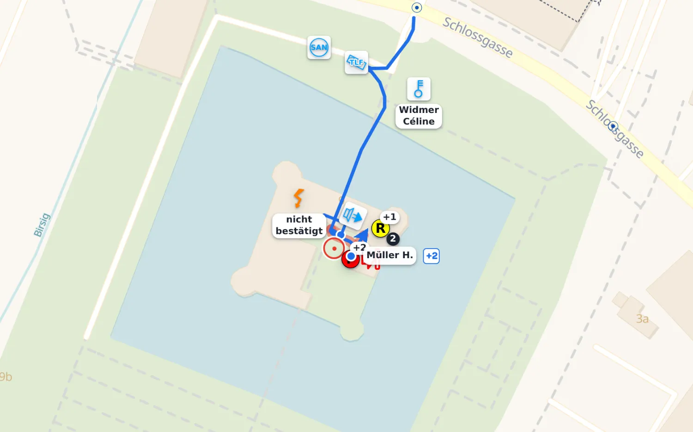

Cette traduction n’a pas encore été vérifiée par une personne francophone des sapeurs-pompiers – les suggestions et corrections sont bienvenues. La démo est en allemand.
Open source · Suisse
La conduite d’intervention numérique pour les sapeurs-pompiers.
KP Front est le poste de commandement numérique sur les lieux :
carte, plans, binômes, journal et rapport dans une seule application.
Ouvrir la démoSans inscription – dans la démo, il y a le feu à Musterdorf (interface en allemand)
KARTE · ZIMMERBRAND · 2611624 / 1263070

Pour qui
Sapeurs-pompiers de milice
Corps locaux
Centres de renfort
Sapeurs-pompiers professionnels
Sapeurs-pompiers d’entreprise
Pour quoi
Incendies
Accidents de la circulation
Assistance technique
Défense chimique et lutte contre les hydrocarbures
KP Front est open source et tourne sur votre propre machine à la caserne ou dans votre propre cloud. Données d’intervention, plans, personnel et rapports restent sous votre contrôle.
Aucun frais de licence
Aucune dépendance à un fournisseur
À exploiter et à faire évoluer vous-mêmes
Notre mesure
« Utilisable à 3 heures du matin – après six mois sans exercice »
Dans un corps de milice, personne n’est devant l’écran tous les jours. L’application
doit donc pouvoir être utilisée correctement à moitié endormi :
l’essentiel visible d’emblée, de bons réglages par défaut plutôt que des options,
et rien qui ne puisse être annulé.
De l’alarme au rapport
Une intervention, une application.
Voilà à quoi ressemble une nuit avec KP Front – la carte, les binômes et la documentation
restent cohérents et compréhensibles pour tous.
03:01
Alarme
L’alarme arrive.
Reprendre en un geste une alarme de votre système d’alerte (p. ex. Divera ou FireHub) – ou démarrer
à la main depuis une adresse, un objet ou la carte. Le lieu et les données de l’objet
sont là avant que le premier véhicule ne roule.
03:07
Situation
La première situation est posée.
Signes conventionnels CSSP, secteurs, conduites et notes sur la carte de situation numérique. Bornes hydrantes,
conduites et positions des véhicules se trouvent en dessous, sous forme de couches.
03:12
Binômes
L’équipe 1 entre.
Pression, moment du repli et temps depuis le dernier contact sont décomptés pour chaque équipe.
L’application alerte avant que la marge ne devienne trop courte – même si personne
ne regarde l’heure à ce moment-là.
03:18
Plan
Le plan d’objet devient un tableau blanc.
Ouvrir le plan d’intervention, dessiner dessus, y placer les équipes, mesurer à
l’échelle – avec les mêmes outils que sur la carte.
03:40
Journal
Tout est dans le journal.
Écrire, ou simplement parler – lorsqu’un service de transcription est configuré,
les notes vocales peuvent devenir du texte ; sinon elles restent en audio dans le
journal. Le journal ne fait que s’allonger : on corrige par une nouvelle entrée.
04:30
Plan de relève
La relève se planifie, elle ne s’estime pas.
Si la nuit s’annonce longue, le plan de relève permet de définir pour chaque personne
de quand à quand elle est disponible et quand elle est engagée. La courbe de
couverture montre où il manque du monde – avant que le trou ne soit là. La gestion des
présences reste indépendante : ici on planifie, là on pointe.
05:55
Rapport
Au retour à la caserne, le rapport est presque terminé.
Situation, effectif, matériel et journal alimentent directement le rapport.
Personne n’a à reconstituer la nuit de mémoire.
Après
Rejouer
La nuit se rejoue.
Pour le débriefing, la fonction Rejouer repasse toute l’intervention : la situation,
les équipes et le journal tels qu’ils étaient à chaque minute. Les longues attentes
sont sautées – quatre heures deviennent quelques minutes.
Tiré de la démo
Voilà à quoi cela ressemble.
Toutes les images proviennent de la démo publique. Cliquez sur
« Ouvrir la démo » et vous serez dans la même situation.
Les captures d’écran sont en allemand : la démo publique l’est, et elles en viennent – des images reconstituées seraient une affirmation plutôt qu’une preuve.
Plan
Plans d’objet et d’intervention avec signes conventionnels, marquages et mesure à l’échelle
Binômes
Surveillance des binômes engagés – temps, pressions et annonces, avec ou sans protection respiratoire
Bâtiment
Les étages les uns sur les autres – quelle équipe travaille à quel niveau
Journal
Documentation continue de tous les événements importants – un service de transcription configuré peut convertir les notes vocales en texte
Présences
Qui est arrivé et depuis quand – la base de la liste d’effectif et du rapport
Plan de relève
Planifier les tours lors d’interventions longues – disponible, engagé, réellement présent, et où la couverture devient insuffisante
Checklists
Les checklists de conduite de votre corps, avec accès direct au plan, au journal et aux outils
Matériel
Saisir ce qui a été engagé et consommé pendant l’intervention, au lieu de l’estimer après
Rapport
Presque terminé au retour à la caserne – contrôler, compléter, exporter en PDF et imprimer
Le changement
Ce qui change.
Rien de tout cela n’est cassé aujourd’hui – la carte de situation sur papier fonctionne
depuis des décennies. KP Front occupe les mêmes fonctions, simplement sans recopiage.
Aujourd’hui
Avec KP Front
Carte de situation sur papier
Image de situation sur chaque appareil
Tableau de surveillance et chronomètre
Une surveillance qui alerte automatiquement
Bouts de papier et mémoire
Un journal qui s’écrit au fur et à mesure
Plan d’objet dans un classeur
Un plan sur lequel on dessine
Rapport le lendemain
Rapport au retour à la caserne
Débriefing de mémoire
Rejouer la nuit du début à la fin
Étendue des fonctions
Ce qu’il y a dedans.
Né d’interventions et d’exercices réels, pas d’une liste de fonctions. Tout ce qui vient
de l’extérieur – alarme, GPS, connexion Microsoft – est facultatif : KP Front
fonctionne aussi entièrement sans ces raccordements.
Carte & plan
Signes conventionnels selon la CSSP, avec attributs et libellés
Secteurs, zones de barrage, surfaces et dessin à main levée
Conduites avec annotations CSSP, chacune rattachée à une équipe
Mesure de distances et de surfaces, à l’échelle également sur le plan
Couches : bornes hydrantes, cadastre des conduites, services cartographiques cantonaux
Répertoire des matières dangereuses : numéros ONU, informations sur les substances et indications concernant les distances d’isolation et de protection, disponibles directement pendant l’intervention
Informations météorologiques et données sur le vent pour soutenir l’appréciation de la situation, ainsi que le radar de précipitations de MétéoSuisse comme couche
Plans d’objet comme tableau blanc et étages superposés
Tableau avec pages CSSP : croquis libre, Première Conduite et feuilles du manuel – imprimés dans le rapport comme l’original
Info bâtiment : données du registre des bâtiments – gaz, mazout, photovoltaïque – et mesures immédiates pour l’objet
Géoréférencement : relier un plan à la carte par des points de repère communs – un seul objet, visible sur les deux surfaces, avec une indication honnête de la précision. La caserne fait aligner ses plans à l’avance et les valide
Annuler/rétablir sur chaque surface – les événements documentés restent traçables
Effectif & moyens
Surveillance PR : pression, moment du repli, temps depuis le dernier contact, alarmes
Urgence PR : une équipe en détresse apparaît aussitôt en rouge, tout en haut, sur tous les appareils – avec chrono d’urgence et équipe de sécurité
Équipes avec ou sans protection respiratoire : effectif, mission et chef d’équipe – sur la carte, sur le plan et dans les étages, avec leur propre couleur, la même partout
Présences avec heures d’arrivée et grades
En route : qui a confirmé l’alarme Divera, directement au-dessus des présences
Plan de relève : planifier les disponibilités et les tours par
personne, visualiser la couverture sur toute l’intervention et imprimer les
formulaires de conduite
Partager sa position : qui ouvre le lien apparaît comme un point sur la
carte de situation – volontairement, et pour cette intervention seulement
Partager l’intervention par lien ; l’accès est clairement signalé et peut être révoqué
à tout moment
Matériel avec stock et consommation
Checklists pour l’aide à la conduite et le chef d’intervention
Rôle chef d’intervention : tenir la présence, les moyens, les check-lists et le rapport – lire la carte et les équipes sans rien déplacer
Documentation
Un journal qui ne fait que s’allonger et ne se réécrit jamais
Notes vocales avec transcription, photos, rappels
Rejouer : repasser l’intervention minute par minute, attentes sautées –
pour le débriefing
Rapport d’intervention prêt au format PDF, avec effectif, matériel, horaires, journal,
croquis, photos et surveillance PR
Analyse pour le débriefing : chiffres clés et ligne du temps sur une feuille à part, à la fin du rapport
Photos en annexe au rapport
Contrôle final : avant la clôture, KP Front indique quelles informations ou clarifications manquent encore dans le rapport
Organisations partenaires avec leur remarque dans le rapport
Feuille de saisie par code QR, pour tous ceux qui ont quelque chose à apporter
Heures d’alarme et d’intervention tirées du déroulement, pas de la mémoire
Exploitation
Fonctionne hors ligne comme application installable – le contrôle de disponibilité indique avant l’intervention si les données nécessaires sont sur l’appareil
Plusieurs appareils connectés travaillent sur le même état – après une interruption de connexion, les modifications sont à nouveau synchronisées
Rôles : modifier, ou seulement suivre
Mode jour/nuit, taille des symboles, grandes zones tactiles pour la tablette
Peut reprendre les alarmes de Divera ou FireHub ; d’autres systèmes d’alerte peuvent être raccordés par l’interface ouverte facultatif
Positions des véhicules par GPS facultatif
Connexion avec Microsoft au compte existant, en plus du PIN facultatif
Visites d’objets sans intervention, hors ligne – check-list, photos et rapport facultatif
Espace d’administration propre à chaque corps : effectif, véhicules, checklists, couches cartographiques et modèles
Projet apparenté
KP Front conduit à l’avant. KP Rück garde la vue d’ensemble à l’arrière.
KP Rück reproduit sous forme numérique le tableau magnétique du poste de
commandement arrière : un tableau pour le personnel, les véhicules et le matériel.
Application distincte, même écriture – les deux reçoivent la même alarme du
système d’alarme et n’ont pas besoin l’une de l’autre.
Exploiter les deux – sans tout configurer deux fois
Alarme
La même charge utile pour les deux. Le raccordement de votre système d’alarme se fait une fois ; chaque application ne reçoit que sa propre adresse.
Accès Divera
Une seule clé pour les deux – mêmes alarmes, même personnel. facultatif
Liste du personnel
La même source dans le même format de fichier – la même personne des deux côtés.
Mots-clés
La même liste de mots-clés d’alarme, donc le même classement dans les deux applications.
Base de données, mises à jour et connexion restent séparées. Aucune des deux n’a besoin de l’autre pour fonctionner.
Guide : les deux sur un même serveur →
Questions & réponses
Les questions les plus fréquentes.
Pourquoi changer ?
Tout le monde voit la même situation au même moment – au véhicule de commandement,
sur la tablette et chez le chef d’intervention. Aucune annonce ne se perd sur un bout de
papier. La surveillance PR alerte automatiquement avant que la marge ne devienne trop courte.
Moins de trafic radio pour des questions dont la réponse est déjà sur l’image de la
situation – et le rapport est presque terminé au retour à la caserne, au lieu du week-end suivant.
KP Front aide la direction d’intervention à garder une situation sans contradictions et à rendre
les écarts visibles : une équipe sans contact radio, un véhicule qui n’est nulle part,
une annonce qui n’est jamais venue.
Où sont stockées les données d’intervention sensibles ?
KP Front est exploité par chaque corps lui-même (auto-hébergé). Les données d’intervention – carte de situation, surveillance PR, journal et plans de bâtiments – restent sur sa propre installation et ses propres appareils : par exemple un mini-PC à la caserne, un serveur propre ou un fournisseur cloud choisi par le corps. Il n’y a pas de serveur central, et rien n’est envoyé automatiquement à un fournisseur ni à nous. Les services de carte, d’adresse et de météo (dont swisstopo par défaut) ne reçoivent que la position demandée ; les autres services externes ne fonctionnent que si le corps les configure lui-même.
En quoi KP Front se distingue-t-il des systèmes commerciaux ?
KP Front est open source (AGPL-3.0) : pas de frais de licence, pas d’abonnement, pas de coût par appareil. Chaque corps exploite sa propre installation et garde ainsi le contrôle de ses données. Restent les coûts propres à l’exploitation, à l’infrastructure et, le cas échéant, à une assistance externe. Le développement vient directement de la pratique des sapeurs-pompiers d’Oberwil BL ; signalements d’erreurs, idées et contributions de la communauté open source sont les bienvenus.
Que faut-il pour l’exploiter ?
Un petit mini-PC ou serveur à la caserne suffit. L’installation, les mises à jour et
les sauvegardes nécessitent une personne à l’aise avec Docker et la ligne de commande,
que ce soit au sein du corps, de la commune ou auprès d’un prestataire informatique. Le
guide et l’espace d’administration accompagnent la mise en place. Nous répondons
volontiers aux questions générales ; les données et l’exploitation restent sous la
responsabilité de chaque corps.
Une assistance est-elle proposée pour l’installation et l’exploitation ?
Oui. Les questions générales concernant l’installation et l’utilisation peuvent recevoir une réponse gratuitement. KP Front peut être exploité sur une infrastructure propre ou auprès d’un fournisseur d’hébergement ou de cloud choisi par le corps de sapeurs-pompiers. Une assistance pour l’installation, la configuration, les mises à jour ou l’exploitation est également possible sur accord individuel. Une assistance plus étendue peut être facturée.
KP Front fonctionne-t-il sans connexion Internet ?
Oui. Installée comme application, KP Front fonctionne sur l’appareil : carte,
plans, binômes et journal restent utilisables même si le réseau tombe.
L’application charge d’elle-même les cartes et les plans autour d’une intervention, peu
après son ouverture – et le contrôle de disponibilité indique avant
l’intervention si les données nécessaires sont sur l’appareil. Après une coupure, les
modifications sont synchronisées dès qu’une connexion est de nouveau disponible ; ce qui
a été saisi entre-temps est conservé.
Peut-on l’adapter à nos procédures ?
Oui. Chaque corps a son propre espace d’administration : effectif, véhicules, doctrine
et modèles y sont librement réglables. Checklists, plans d’objet et couches
cartographiques proviennent de vos propres données de corps et se chargent avec les
outils en ligne de commande livrés. Et comme tout le code est sur
GitHub ,
tout le reste peut être construit – par vous-mêmes ou sur mandat.
KP Front ne fonctionne-t-il qu’en Suisse ?
Non. En tant que logiciel open source, KP Front est librement accessible et peut être adapté aux conditions locales partout dans le monde. D’origine, l’application est préconfigurée pour la Suisse – avec les cartes swisstopo, les signes conventionnels selon la CSSP et les modèles CSSP pour la conduite en intervention. Hors de Suisse, d’autres fonds de carte peuvent être configurés ; la recherche d’adresses ne prend aujourd’hui en charge que l’interface swisstopo et doit y être adaptée.
Dans quelles langues KP Front est-il disponible ?
L’interface utilisateur de KP Front est actuellement disponible en allemand. En tant qu’application open source, KP Front peut être étendu à d’autres langues. Cela nécessite une traduction complète et vérifiée par des spécialistes de la terminologie des sapeurs-pompiers.
Comment commencer ?
Par la démo,
sans inscription – à Musterdorf, le feu est déjà déclaré, et tous les visiteurs partagent
la même intervention (elle recommence à minuit et à midi). Ensuite, l’essayer à un
exercice. Si cela convient, le guide d’installation mène à votre propre instance.
Contact
Dites-nous ce que vous en pensez.
Vous voulez essayer KP Front chez vous ? Quelque chose manque, ou ne fonctionne pas
comme vous l’attendiez ? Écrivez-nous – nous lisons tout.
Pour les questions et les idées ouvertes, il y a les
discussions GitHub.